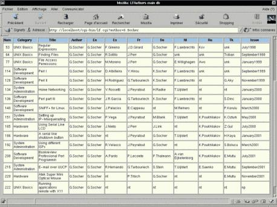

|
| Домой | Карта | Индекс | Поиск |
| | |
| Новости |
| |
Архивы |
| |
Ссылки |
| |
Про LF
| |
| Эта заметка доступна
на: English
Castellano
ChineseGB
Deutsch
Francais
Nederlands
Portugues
Russian
Turkce
Arabic
|
автор Georges
Tarbouriech
<georges.t(at)linuxfocus.org>
Об авторе:
Georges давно использует Unix. Ему нравится, когда свободно
распространяемое программное обеспечение находит применение в
профессиональной
деятельности.
Перевод на
Русский:
Пухляков Кирилл <kirill(at)linuxfocus.org>
Содержание:
- Пара
слов об этих приложениях
- Наш
пример
- Создание
базы данных
- Что
делает Perl
- Вопросы
безопасности
- Что
еще?
- Ссылки
- Страница
отзывов
|
MySQL и Perl: взаимовыгодное сотрудничество
Резюме:
MySQL и Perl уже достаточно долгое время находятся на рынке свободно
распространяемого программного обеспечения. Но тем не менее все так же широко
используются, несмотря на веяния "моды". В заметке рассказывается о совместном
использовании этих инструментов как в Интернет, так и в локальной сети.
Рассматриваемый в заметке пример касается Unix систем, не имеет значения
коммерческие они или нет, но он легко может быть адаптирован и к другим
широкораспространенным "системам".
В заметке будет показано - какие задачи
можно решать с помощью этих приложений, простоту их использования, скорость их
работы, вопросы безопасности...
С другой стороны у заметки нет цели быть
учебником по MySQL или Perl, нет цели познакомить вас с этими
приложениями.
Итак, наша цель - посмотреть взаимодействие этих приложений, но
не будем забывать, что "Существует Более Одного Способа Сделать Это".
Пара слов об этих приложениях
MySQL - система управления реляционными базами данных(RDBMS) - ее сайт
- http://www.mysql.com/. Это приложение
распространяется по GNU GPL в зависимости от цели использования. Обратите
внимание на вопросы лицензирования на сайте MySQL. MySQL работает на многих
платформах и как сервер и как клиент. Конечно же среди свободно распространяемых
приложений есть и другие RDBMS, но мы не будем сравнивать их с MySQL, потому,
что выбор системы для заметки был произвольным. Также не будем сравнивать и с
"тяжелой артиллерией" коммерческих приложений - такими системами как Informix,
Oracle, Sybase... Достаточно будет сказать, что MySQL наиболее популярная
система для интернет. Для заметки будем использовать версию 3.23.36(опять же -
выбрана произвольно). В момент написания заметки стабильная версия 3.23.46 и
экспериментальная, давно ожидаемая, версия 4.0. На сайте можно взять эту систему
как в исходных кодах, так и готовыми пакетами.
Для использования MySQL и
Perl необходимы модули Perl DBI, а если быть более точным DBI,
Msql-Mysql-modules, Data-Dumper и Data-ShowTable.
Не будем рассказывать об
их установке - она очевидна и кроме того все пакеты содержат всю необходимую
информацию.
Perl - "язык для извлечения и представления данных".
Сначала предполагалось использовать его для обработки документов, но очень скоро
границы его применения значительно расширились - от решения вопросов
администрирования систем до написания cgi скриптов и создания интерфейсов к
базам данных.
Perl входит в состав многих(если не всех) дистрибутивов Unix,
опять же несмотря на то - бесплатные они или нет. Текущая стабильная версия
5.6.1, экспериментальная - 5.7.2. Для нашей заметки будем использовать версию
5.005_03. Если на вашем компьютере не установлен Perl(интересно - как такое
могло случиться ?), можете скачать его с сайта http://www.perl.com/. Там же вы найдете
множество модулей, которые находятся в секции CPAN этого вебсайта.
И
наконец, взаимодействие этих приложений можно осуществлять также с помощью
вебсервера Apache! Выбор Apache сделан потому, что этот вебсервер также входит в
поставку многих дистрибутивов Unix, если у вас его нет(где вы вообще взяли свой
дистрибутив ?) - скачайте его с http://www.apache.org/.
Наш пример
Возможно вы заметили, что LinuxFocus выходит на многих языках. Это значит,
что редактор журнала должен иметь возможность отслеживать состояние заметок -
какие поступили, какие переведены и т.д. В настоящее время журнал обладает базой
из примерно 200 заметок, которые в свою очередь обычно выходят на 5 языках - что
составляет примерно 1000 заметок. С этой базой постоянно надо работать -
архивировать ее, подправлять и т.д. И как вы думаете кто этим занимается?
Конечно же Perl.
Наш главный редактор - Guido Socher создал множество Perl
скриптов, чтобы нам было проще работать, также он написал три заметки о языке
Perl и обзор книги по программированию на Perl(все ссылки в конце заметки).
Javi, редактор испанской секции, создал Perl скрипт для управления процессом
перевода заметок.
Atif, один из лучших наших авторов - из королевства Perl -
вот почему его родной язык Perl. Также он помогает проекту MySQL - работает над
приложением управления через веб.
Я являюсь одним из французских редакторов
LinuxFocus, я ленив и поэтому создал свою собственную базу данных LinuxFocus -
конечно же с помощью MySQL и Perl!
Создание базы данных
Вы конечно же установили уже MySQL, завели пользователей и защитили все
паролями. Рассмотрение вопросов установки не входит в рамки этой заметки, тем
более, что документация, поставляемая с MySQL - исчерпывающая.
Запустите
сервер MySQL с помощью скрипта mysql.server.
Далее установите
соединение с сервером с помощью команды
mysql -h host -u user
-p.
Если сервер запущен на локальном компьютере - можно не
использовать опцию -h host.
После ввода пароля вы подключаетесь к
серверу(по крайней мере должны подключиться!) и теперь можно начинать процесс
создания нашей базы.
В приглашении mysql введите
CREATE DATABASE
lf;
Так как это моя база данных - я назвал ее lf(LinuxFocus), вы
естественно можете дать ей любое другое имя. Далее пропишите права
пользователям, чтобы это сделать вы сами должны обладать правами администратора.
Если вы хотите чтобы пользователь мог управлять базой данных - выполните
следующую команду:
GRANT ALL ON lf.* TO username;
Теперь,
когда база данных создана, выполните команду USE lf, чтобы поработать с
ней. Создайте таблицу, мы создадим следующую и назовем ее trissue
:
CREATE TABLE trissue (num INTEGER UNSIGNED, category VARCHAR(25),
title VARCHAR(40), author VARCHAR(20), en VARCHAR(20), es VARCHAR(20), fr
VARCHAR(20),de VARCHAR(20), nl VARCHAR(20), ru VARCHAR(20), tk VARCHAR(20),
issue VARCHAR(20));.
Теперь проверьте что вы сделали следующими
командами :
USE lf
SHOW TABLES;
DESCRIBE
trissue;
Вот и все.
Теперь неплохо бы ее чем-нибудь наполнить -
самый простой путь создать текстовый файл с разделителями 'tab' и загрузить его
в базу командой:
LOAD DATA LOCAL INFILE "maindb.txt" INTO TABLE
trissue;
Если текстовый файл был создан корректно - данные в базе и
это можно проверить командой :
SELECT * FROM trissue;
Теперь данные из нашей базы можно выбирать SQL запросами.
До сих пор
мы использовали MySQL и вроде этого было достаточно - какова же задача Perl
спросите вы?
Что делает Perl
Perl поможет нам автоматизировать запросы, отображать результаты в браузере и
т.д. Хочу еще раз повторить - вы должны установить модули для взаимодействия
Perl и MySQL.
Сейчас мы создадим Perl-скрипты, которые будем использовать в
качестве cgi-скриптов - это будут смешанные программы, состоящие из Perl и HTML,
чтобы можно было одновременно и делать запросы и отображать данные.
Наш
скрипт будет выбирать названия заметок, написанных одним автором - отображать мы
будем порядковый номер заметки, ее категорию, название, имена
переводчиков(только для полностью поддерживаемых секций) и выпуск, в котором она
вышла.
Можете использовать этот скрипт как основу для своих собственных
программ, но предупреждаю - этот скрипт может иметь проблемы безопасности, более
комментированный вариант скрипта здесь.
# First, we say this is a "Tainted" Perl script.
#!/usr/bin/perl -Tw
#
# This is a comment
# db consult
#
# We use the Perl DBI module
use DBI;
# As cgi :
use CGI qw(param());
print <<END_of_start;
Content-type: text/html
<html>
<title>LFAuthors main db</title>
<center><TABLE>
<TR VALIGN=TOP>
<TD><form action="/cgi-bin/lf.cgi" method="get">
# Here comes the button's title for the launching page
<input type="submit" value=" LFAuth ">
</form>
</TD>
</TR>
</TABLE>
Теперь делаем запрос к базе данных
<center><H2>Search by author</H2></center>
<form action=\"/cgi-bin/lf.cgi\" method=\"get\">Author name : <input
type=\"text\" size=\"30\" name=\"author\"><input type=\"submit\"
value=\"Search...\"></form></center>
END_of_start
if (param("author") ne '') {
$author = param("author");
$autsrch.='"';
$autsrch.=$author;
$autsrch.='"';
# We connect to the database named lf as user doe
$dbh = DBI->connect("DBI:mysql:lf","doe",'');
$sth = $dbh->prepare("
select *
from trissue
where
author = $autsrch
");
$sth->execute;
Далее подготавливаем и отображаем результаты запроса. Если мы не будем
вводить имя автора - нам будут показаны все заметки, если имя введем - только
заметки автора. В случае наличия тысяч записей в базе данных - не советую
выводить все содержимое!
print <<END_suite;
<center>
<TABLE BORDER=>
<tr bgcolor=#A1C4EE>
<th width=60 align=CENTER><font color=#000000> Num </font></th>
<th width=110 align=CENTER><font color=#000000> Category </font></th>
<th width=110 align=CENTER><font color=#000000> Title </font></th>
<th width=110 align=CENTER><font color=#000000> Author </font></th>
<th width=110 align=CENTER><font color=#000000> En </font></th>
<th width=110 align=CENTER><font color=#000000> Es </font></th>
<th width=110 align=CENTER><font color=#000000> Fr </font></th>
<th width=110 align=CENTER><font color=#000000> De </font></th>
<th width=110 align=CENTER><font color=#000000> Nl </font></th>
<th width=110 align=CENTER><font color=#000000> Ru </font></th>
<th width=110 align=CENTER><font color=#000000> Tk </font></th>
<th width=110 align=CENTER><font color=#000000> Issue </font></th>
</tr>
END_suite
while( ($num,$category,$title,$author,$en,$es,$fr,$de,$nl,$ru,$tk,$issue)
=$sth->fetchrow() ) {
print "<tr>";
print "<td width=60 bgcolor=#FFFFE8 align=center> $num</td>";
print "<td width=110 bgcolor=#FFFFE8 align=left> $category</td>";
print "<td width=110 bgcolor=#FFFFE8 align=left> $title</td>";
print "<td width=110 bgcolor=#FFFFE8 align=left> $author</td>";
print "<td width=110 bgcolor=#FFFFE8 align=left> $en</td>";
print "<td width=110 bgcolor=#FFFFE8 align=left> $es</td>";
print "<td width=110 bgcolor=#FFFFE8 align=left> $fr</td>";
print "<td width=110 bgcolor=#FFFFE8 align=left> $de</td>";
print "<td width=110 bgcolor=#FFFFE8 align=left> $nl</td>";
print "<td width=110 bgcolor=#FFFFE8 align=left> $ru</td>";
print "<td width=110 bgcolor=#FFFFE8 align=left> $tk</td>";
print "<td width=110 bgcolor=#FFFFE8 align=left> $issue</td>";
print "</tr>";
}
print "</TABLE>";
print "<BR>";
print "<BR>";
print "<br>";
} else {
# DB Connect
$dbh = DBI->connect("DBI:mysql:lf","doe",'');
# Search
$sth = $dbh->prepare("
select *
from trissue
");
$sth->execute;
# Display result
print <<SUITE;
<center>
<TABLE BORDER=>
<tr bgcolor=#A1C4EE>
<th width=60 align=CENTER><font color=#000000> Num </font></th>
<th width=110 align=CENTER><font color=#000000> Category </font></th>
<th width=110 align=CENTER><font color=#000000> Title </font></th>
<th width=110 align=CENTER><font color=#000000> Author </font></th>
<th width=110 align=CENTER><font color=#000000> En </font></th>
<th width=110 align=CENTER><font color=#000000> Es </font></th>
<th width=110 align=CENTER><font color=#000000> Fr </font></th>
<th width=110 align=CENTER><font color=#000000> De </font></th>
<th width=110 align=CENTER><font color=#000000> Nl </font></th>
<th width=110 align=CENTER><font color=#000000> Ru </font></th>
<th width=110 align=CENTER><font color=#000000> Tk </font></th>
<th width=110 align=CENTER><font color=#000000> Issue </font></th>
</tr>
SUITE
while( ($num,$category,$title,$author,$en,$es,$fr,$de,$nl,$ru,$tk,$issue)
=$sth->fetchrow() ) {
print "<tr>";
print "<td width=60 bgcolor=#FFFFE8 align=center> $num</td>";
print "<td width=110 bgcolor=#FFFFE8 align=left> $category</td>";
print "<td width=110 bgcolor=#FFFFE8 align=left> $title</td>";
print "<td width=110 bgcolor=#FFFFE8 align=left> $author</td>";
print "<td width=110 bgcolor=#FFFFE8 align=left> $en</td>";
print "<td width=110 bgcolor=#FFFFE8 align=left> $es</td>";
print "<td width=110 bgcolor=#FFFFE8 align=left> $fr</td>";
print "<td width=110 bgcolor=#FFFFE8 align=left> $de</td>";
print "<td width=110 bgcolor=#FFFFE8 align=left> $nl</td>";
print "<td width=110 bgcolor=#FFFFE8 align=left> $ru</td>";
print "<td width=110 bgcolor=#FFFFE8 align=left> $tk</td>";
print "<td width=110 bgcolor=#FFFFE8 align=left> $issue</td>";
print "</tr>";
}
print "</TABLE>";
print "<BR>";
}
print end_html;
$sth->finish;
# Disconnect
$dbh->disconnect;
exit;
Вот результаты запроса в браузере :

Вопросы безопасности
Если вы хотите организовать доступ к базе данных на своем сайте -
позаботьтесь о безопасности. Естественно мы не можем дать пошаговую инструкцию
по безопасности сайта или сервера баз данных. Тем не менее важно хотя бы
взглянуть на основы.
Короче говоря, предоставляя услуги в веб прежде всего
защитите свой веб-сервер. Эта тема за пределами данной заметки, если хотите
поближе познакомиться с этим вопросом - направляйтесь на the Linux Documentation Project - неплохое
место для начала.
Следующий вопрос - безопасность сервера баз данных. Когда
будете устанавливать MySQL не пропустите раздел, посвященный безопасности в
руководстве по MySQL. Первое, на что следует обратить внимание - пароли
пользователей - никогда не делайте безпарольных пользователей, особенно root'ов
баз данных(может отличаться от root'а самой системы). Следующее тонкое место -
права пользователей - никогда не давайте ВСЕ ВСЕМ. Вроде перечислил очевидные
вещи, но многие забывают даже о них!
Если немного углубиться - почему бы не
сделать chroot базы данных? Обратите внимание на заметку
"Chrooting all services" в этом выпуске. В ней рассказывается о другой базе
данных, но применимо также и к MySQL.
Следующий момент - передача данных.
Неплохо бы пустить все данные через туннель. Подробнее читайте здесь.
И наконец - безопасное программирование как основа безопасности системы.
Perl - мощный язык программирования, но программируя на нем достаточно легко
сделать ошибку - читайте внимательно эту заметку
- она посвящена программированию безопасных cgi-скриптов. Обязательна для
прочтения!
Я подразумеваю также, что ваша система не имеет общеизвестных дыр
в защите, на нее установлены все патчи и масса приложений NIDS (Network
Intrusion Detection System) таких как snort (http://www.snort.org/), брандмауэр, сканнеры
(nmap, nessus), и т.д.
Вопросы безопасности
всегда будут актуальны. Опасность вторжения можно только уменьшить, но каждый
день уловки злоумышленников становятся все изощреннее и изощреннее. Вас
предупредили.
Что еще?
Так как Существует Более Одного Способа Сделать Это - вы можете выбрать свой.
На самом деле выбор RDBMS и языков программирования достаточно велик. Идея нашей
заметки - показать взаимодействие MySQL и Perl.
Конечно выбор был немного
субьективным: мне нравится MySQL за свой небольшой размер, высокую скорость
работы и многоплатформенность. Также я очень уважаю работу команды MySQL и тех,
кто им помогает. И это мне нравится больше всего - они не изобретают колесо.
Что касается Perl - мне кажется уже сказано достаточно о нем, что я могу еще
добавить? Надеюсь вы не можете работать без него кем бы вы ни были -
администратором, разработчиком и т.д. Есть журнал Perl Journal, который теперь
включают в SysAdmin magazine раз в два выпуска. Хотите подписаться? Посетите http://www.samag.com/.
Раз уж мы заговорили
о великой работе - представляю ставший уже обычным раздел выходящий за рамки
заметки. Не заметили ли вы, читатели журнала LinuxFocus, что наша команда не так
уж велика, но несмотря на это вы можете читать заметки на разных языках.
Заметили ли вы, что некоторые секции ведут один или два человека и делают всю
работу? Они и вебмастеры и переводчики и т.д. Посмотрите на русскую или турецкую
секции - большинство заметок перевели Кирилл и Erdal. Обратите внимание на
секции, находящиеся в стадии развития - португальскую и арабскую - та же
ситуация! Мне очень приятно поздравить их с этой прекрасной работой. Спасибо вам
всем - сообщество свободно распространяемого программного обеспечения благодарно
вам.
Извините за отклонение от темы, но я уверен, что это не могло быть не
сказано.
В конце скажем еще пару слов о свободно распространяемом
программном обеспечении. Команды MySQL и Perl заслуживают огромной
благодарности. Они предлагают прекрасные инструменты в большинстве случаев
бесплатно. Эти инструменты часто так же хороши как и коммерческие(если не
лучше), они постоянно улучшаются, хорошо докуметированы и приспособлены к
использованию на многих Unix системах.
Эта заметка не была обучающей - ее
задача убедить вас поработать с этими инструментами и понять насколько они
полезны.
Мы живем в великие времена - не правда ли?
Ссылки
Perl mongers
Заметки Guido о Perl
:
Perl
I
Perl
II
Perl
III
Обзор книги по программированию на Perl :
Perl
Programming
Участие
Atif в проекте MySQL.
Другая заметка на LinuxFocus о MySQL :
MySQL
Заметки на LinuxFocus о SQL :
SQL Part
I
SQL Part
II
Страница отзывов
У каждой заметки есть страница отзывов. На этой
странице вы можете оставить свой комментарий или просмотреть комментарии других
читателей.
Webpages
maintained by the LinuxFocus Editor team
©
Georges Tarbouriech, FDL
LinuxFocus.org
Click here to report a fault or send a comment to
LinuxFocus
|
Translation
information:
| en --> -- : Georges Tarbouriech <georges.t(at)linuxfocus.org> |
| en --> ru: Пухляков Кирилл
<kirill(at)linuxfocus.org> | |
2002-01-02, generated by lfparser version 2.19